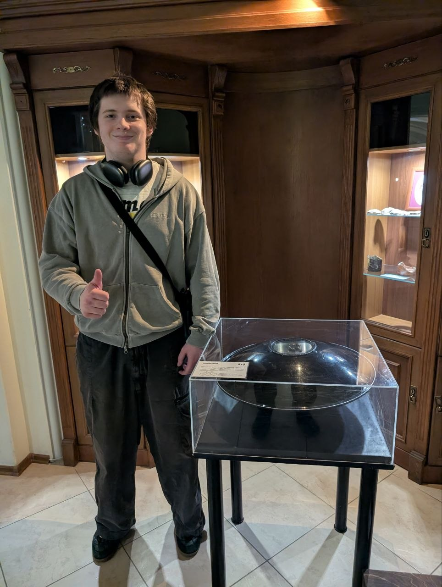
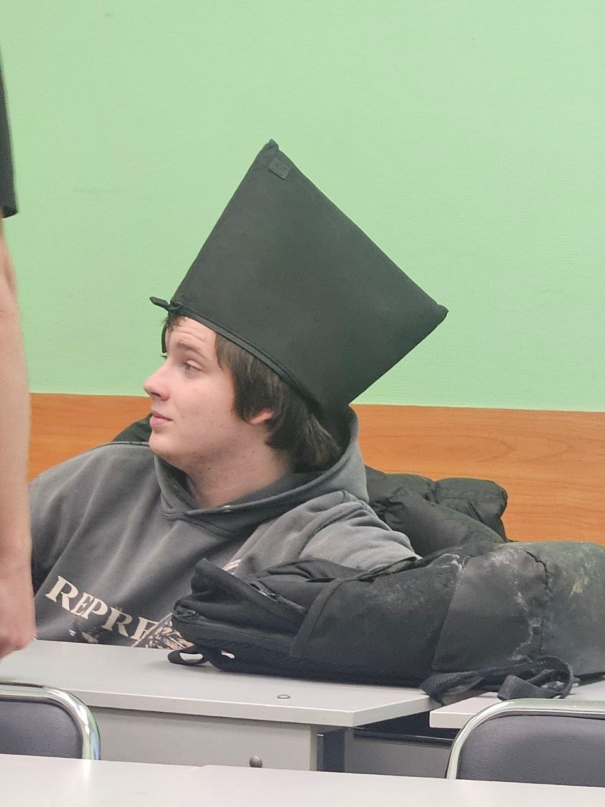
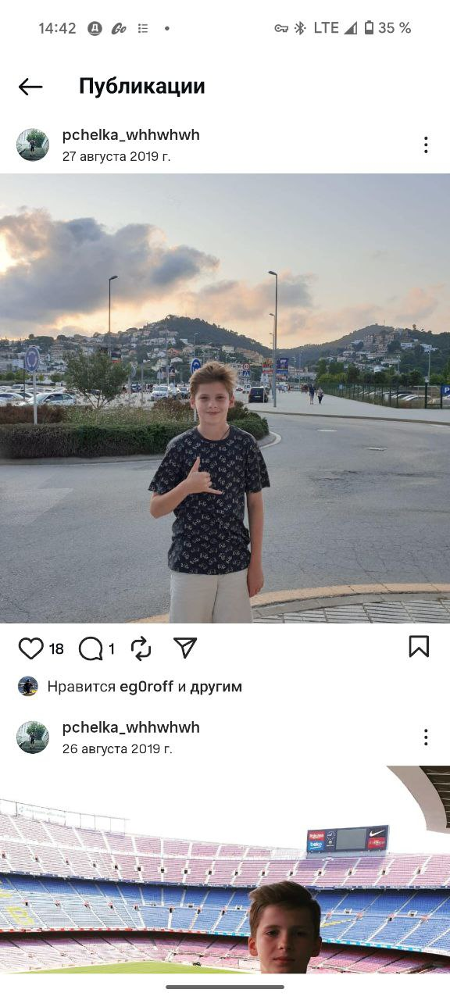
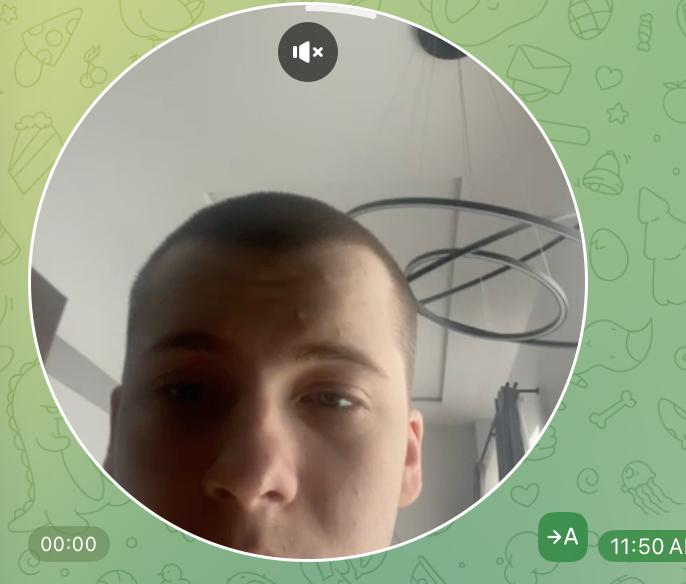

PERSONAL SITE / 2005 / ITMO
ХОЧУ КИНУТЬ
ЭВРИКУ.
Сейчас работаю в «Эврике». Ищу новую Go-работу.
Константин Константинович Ясинский — Go-разработчик, боксёр и бывший капитан футбольной команды. Это сайт человека, который хочет кинуть «Эврику» и перейти в новую сильную команду.
GO / BOX / STONE / ITMO
ЭВРИКА

СТАТУС: ГОТОВ КИНУТЬ ЭВРИКУBUGBYE,ЭВРИКА
GO DEVELOPER ✦ BOXER ✦ STONE ISLAND ENJOYER ✦ EX-FOOTBALL CAPTAIN ✦ GO DEVELOPER ✦ BOXER ✦ STONE ISLAND ENJOYER ✦
01 / ДОСЬЕ
КТО ТАКОЙ
КОСТЯН?
Учусь в ИТМО на «Информационных системах и технологиях». Сейчас работаю в «Эврике» и ищу следующую работу в Go.
В прошлом капитан футбольной команды, сейчас занимаюсь боксом. Умею работать в команде, держать темп и возвращаться после неудачного деплоя. Ношу Stone Island — зависимость не планирую выпиливать.
и технологии
и режим выживания
новой работы

«Я подожду. Но недолго.»
02 / ФИЗИЧЕСКИЙ СТЕК
НЕ ТОЛЬКО
БЭКЕНД.
Бокс — не декоративный пункт в био. Тренировки, дисциплина и нормальная реакция, когда что-то идёт не по плану.
STONE ISLAND ENJOYER
SINCE 2005 / AUTHENTIC KOSTYAN UNIT
03 / ПОРТФОЛИО
РАБОЧИЕ
РАУНДЫ.
Наведи на карточку. Костян проверит проект на прочность.
01 / ГЛАВНЫЙ РАУНД
ОСС В MAX
Бот и мини-приложение для общих собраний собственников: Go API, React, TypeScript, PostgreSQL, Docker, CI и PDF-протоколы.
- GO
- REACT
- POSTGRES
- DOCKER
BanMashine
Антиплагиат лабораторных работ прямо внутри Moodle: текст, формулы, изображения и метаданные.
- GO
- .NET
- PYTHON
- MINIO
Waysfinder
Telegram-бот на Go, который по шагам ищет маршруты через Яндекс Расписания.
- GO
- TELEGRAM
- DOCKER
04 / ПУТЬ КОСТЯНА
С ФУТБОЛА
В GO.
- 2019Стадион, футбол и будущий капитан команды.
- СЕЙЧАСИТМО, бокс, Go и проекты, которые можно запустить.
- ДАЛЬШЕРабота, сильная команда и инфраструктура без магии.

05 / ДОКАЗАТЕЛЬСТВА
ФОТОАРХИВ
БЕЗ ЦЕНЗУРЫ.

06 / КОНТАКТ
ПОМОГИ КИНУТЬ
ЭВРИКУ.
Костян уже работает в «Эврике». Но хочет кинуть её ради новой Go-команды. Открой GitHub и придумай, как ему помочь.
ОТКРЫТЬ GITHUB ↗«Я хочу кинуть Эврику, сука.»